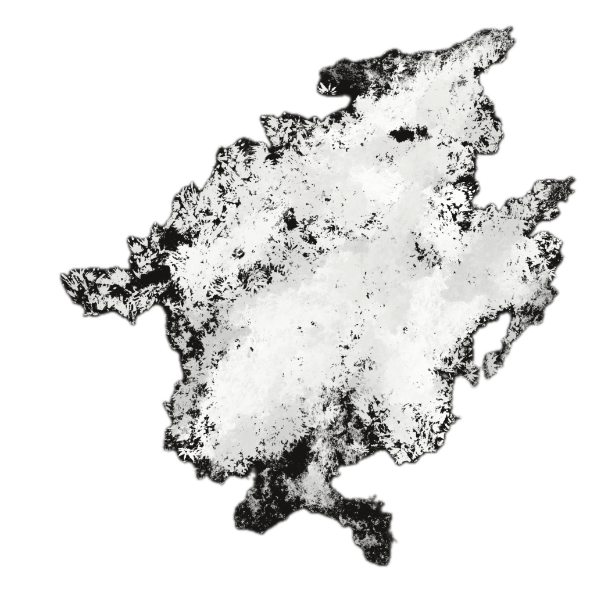

" Les paroles n'engagent à rien. Montrez-moi le code. "
- Linus Torvalds
DORIAN
DECITRE
PORTFOLIO PROFESSIONNEL — 2026
Domaine de prédilection
Étudiant en BUT2 RACA Informatique à Amiens.
Profil full-stack orienté développement d'applications et gestion d'infrastructures.
